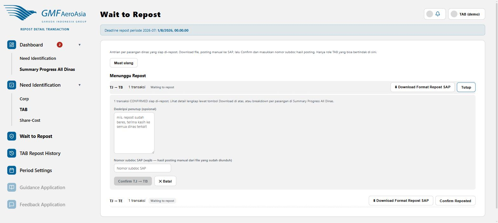

Antrian pasangan dinas siap direpost ke SAP
rdt/need-approval

- Klik Download Format Repost SAP untuk mengunduh file Excel siap-posting (format resmi 8 kolom) berisi transaksi yang sudah Confirmed pasangan dinas tersebut.
- Posting file itu secara manual ke SAP (di luar aplikasi RDT).
- Klik Confirm Reposted — form akan terbuka seperti gambar di atas.
- Isi Nomor subdoc SAP (wajib — nomor hasil posting manual) dan deskripsi penutup (opsional, akan jadi komentar penutup diskusi).
- Klik Confirm [dinas] → [dinas] untuk menyelesaikan.
Kalau satu pasangan punya transaksi terlalu banyak untuk satu file SAP (di atas 300 baris), sistem otomatis membaginya jadi beberapa file (.zip berisi beberapa file Excel) — Anda tinggal posting tiap file dan menambahkan nomor subdoc tambahan lewat menu TAB Repost History (lihat panduan terpisah).